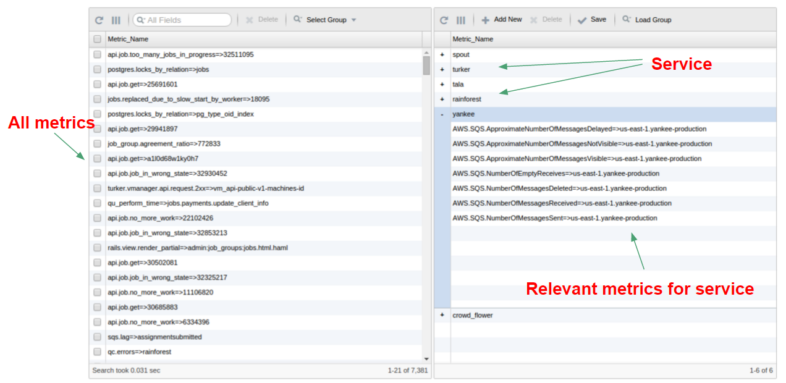
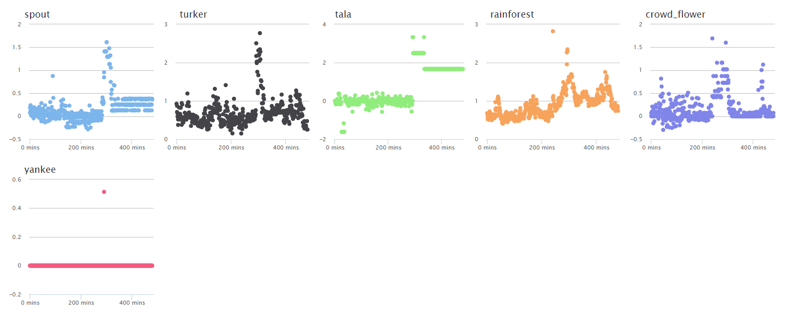
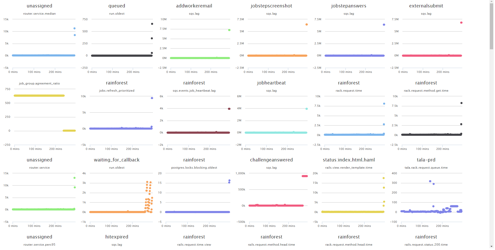

Finding the needle in the haystack.
Rainforest QA had several apps hosted on Heroku, but depended on AWS SQS for message passing. The specific incident here was that SQS had an outage. They had over 7,000 metrics (across their Heroku logs, CloudWatch metrics, and custom metrics), which were stored in Librato. While they were alerting on too many messages being passed through SQS, they did not anticipate that there could be an outage. Hence, they were not alerting on too few messages being passed through the service. Setting up an alert on all 7,000 metrics would not only require them to maintain the thresholds, but would ultimately lead to alert fatigue.
Thus, in the face of an incident, they were forced to dig through all their metrics before they uncovered the root cause. They had all the necessary data to diagnose the issue, but because there were so many metrics, it took them over 45 minutes to discover the problem.
They reached out to Overseer to help them improve their reliability metrics.
Given the volume of metrics, Overseer wanted to come up with an approach that would help eliminate as much noise as possible. If Overseer could reduce the number of metrics that an operator would have to look at, they’d be able to uncover the clues that would help them diagnose root cause faster. One way to achieve that was by taking a top-down approach to eliminate large quantities of metrics that would otherwise need to be looked at.
Step 1 -
The first step consisted of partitioning their 7,000+ metrics into logical groups that reflect different aspects of their system. They chose to partition the metrics into 6 groups, in which each group would represent a different app.
This step essentially created a specification of their system and enabled Overseer to understand which metrics should be analyzed as a group. In this case, they were interested in understanding the health of each of their six apps.
Step 2 -
Performing Step 1 enables the operator to encode their knowledge of the system into the tool. Once this is done, the tool is able to auto-generate a new dashboard for each of their services. In Step 1, they partitioned their metrics into 6 services, resulting in a dashboard with 6 charts, one for each of their services. Basically, this dashboard summarized their 7,000+ metrics into 6 charts. And each chart attempts to quantify the health of that service by summarizing all the metrics that were tagged to that service (the health score). When the health score for a given service spikes, that means the underlying metrics for that service are degrading, and hence something could be wrong.
Step 3 -
Picking a point on the spike around the middle of the “rainforest” plot, you can see a ranking of the underlying metrics for that group.
The next step is to interrogate the machine learning model to understand what caused this spike in the health score. This approach will quickly help to organize the underlying metrics for a service at some point in time by placing the important metrics near the top (because they contributed most to the overall health score) and the least important near the bottom (because they contributed least to the health score).
By looking at the plots, you can see that there are several references to “sqs” metrics. In a matter of minutes, Rainforest would’ve known that there was something going on with SQS. Note that Overseer is not telling them that SQS is broken - it's simply helping them sift through their data faster.
It took Rainforest QA over 45 minutes to dig through their data and find the problem, but Overseer would’ve been able to give them the right clues within 4–5 minutes from the start of the incident.